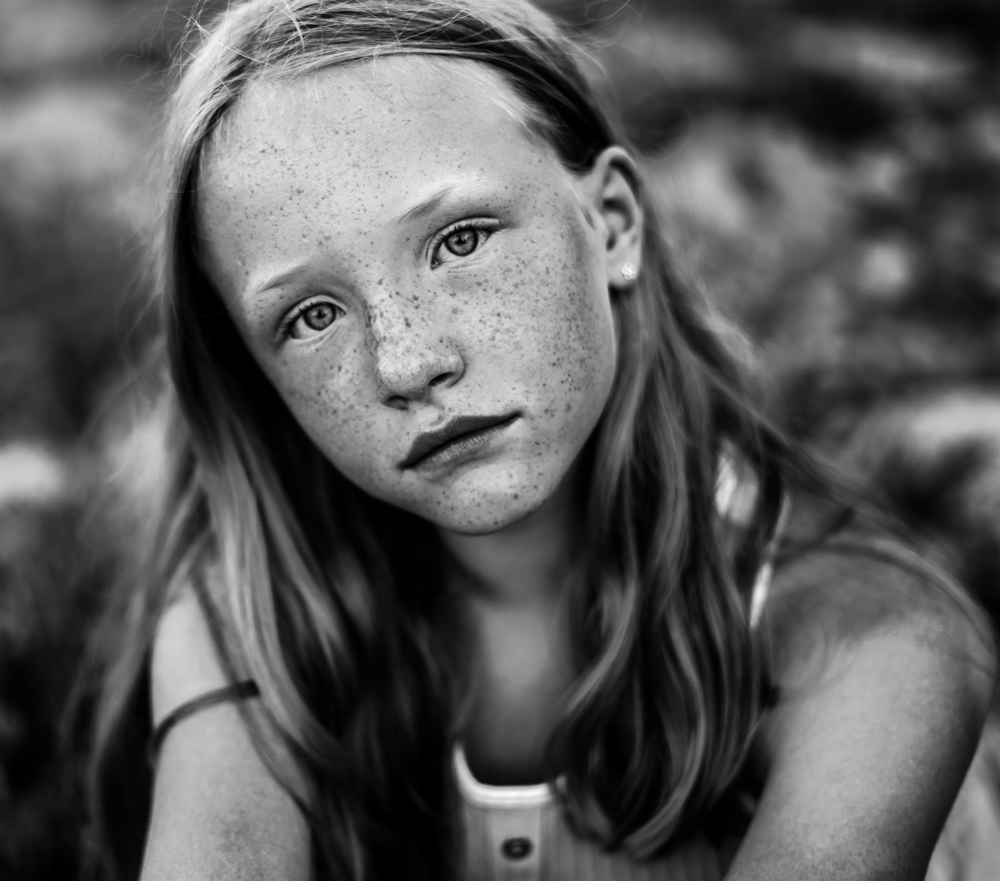
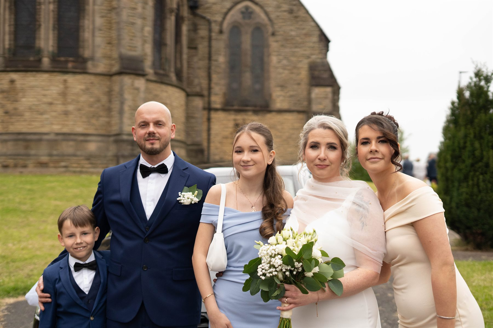
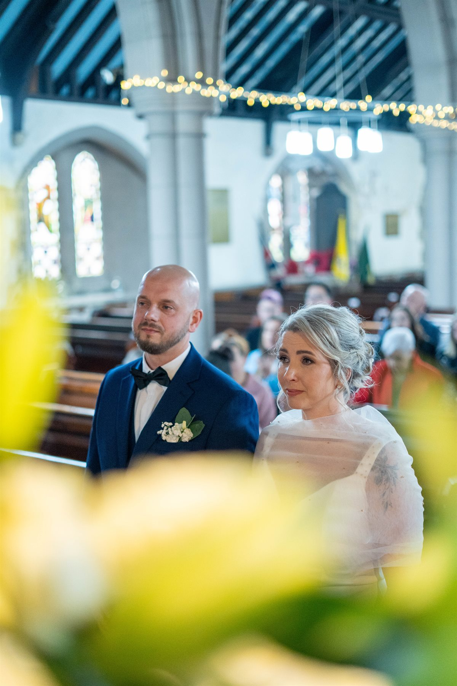
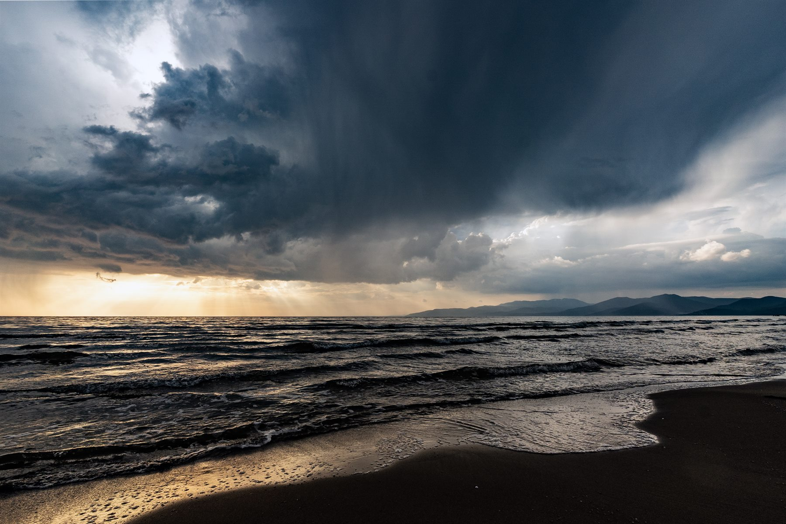
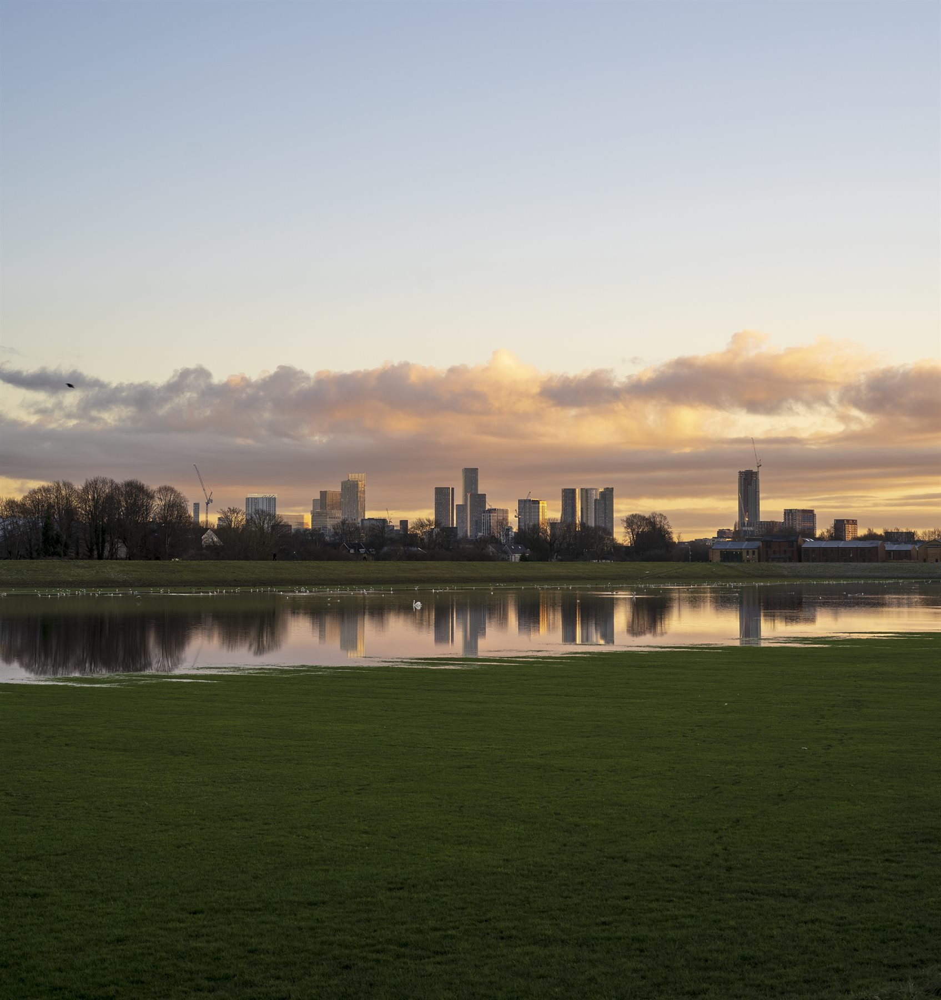
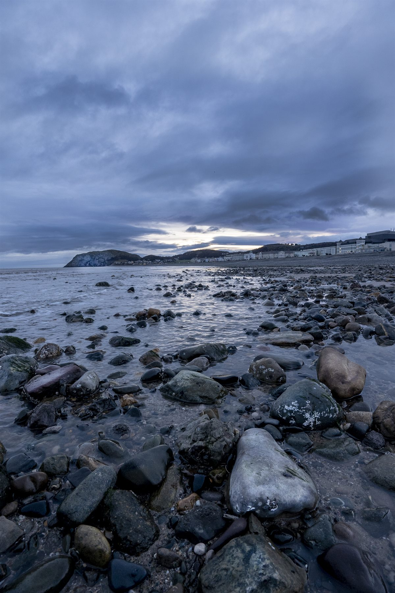
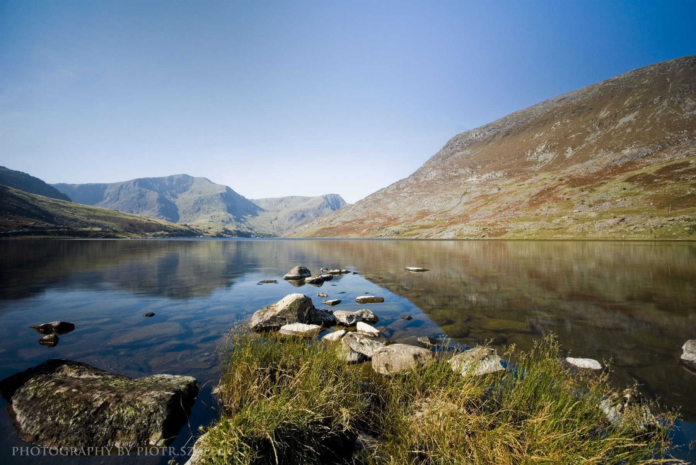
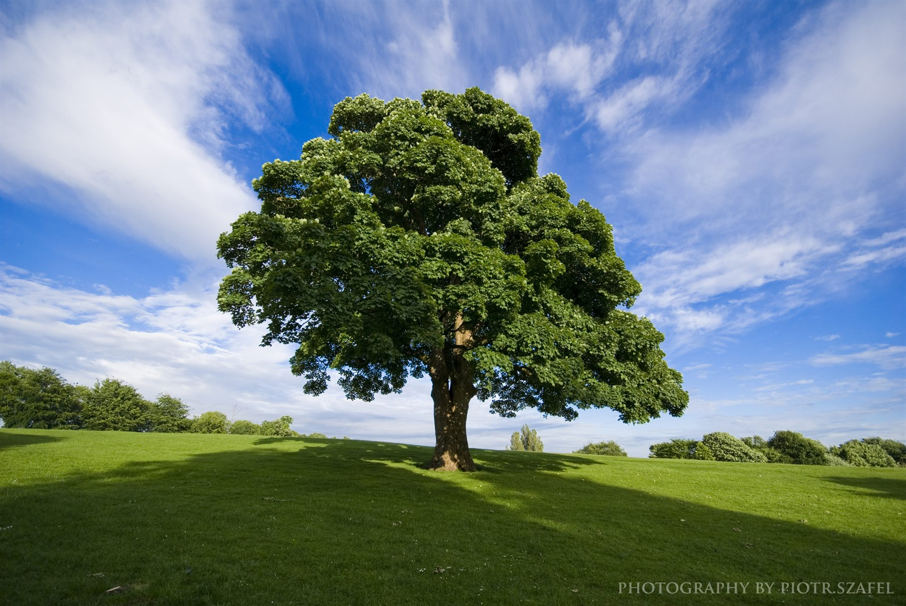
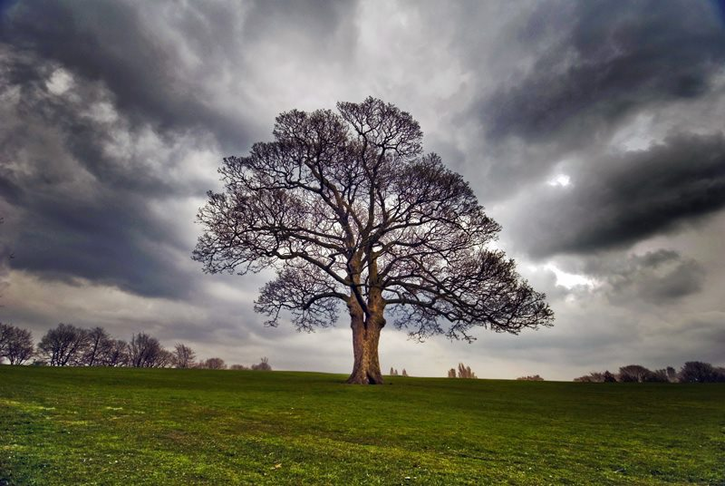
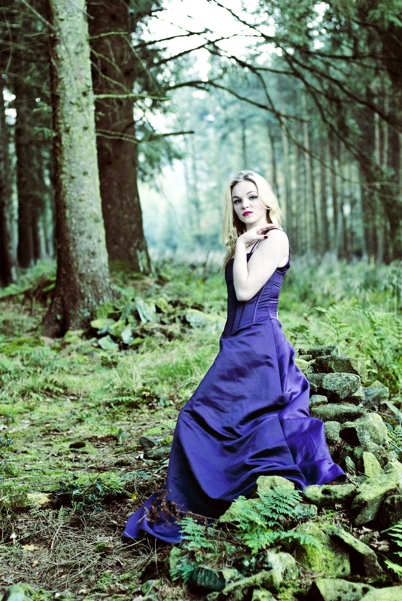

Weddings / Portraits / Business / Real Estate
Peter Szafel Photography
Manchester-based photographer available across the UK and beyond, capturing genuine stories with creativity, care, and attention to detail.
About me
Creative photography and visual storytelling from Manchester to wherever the story takes us.
Peter Szafel is a passionate photographer based in Manchester, available for projects across the UK and beyond. Originally born in Poland in 1980, Peter moved to the United Kingdom in 2007, bringing with him a lifelong love for photography and visual storytelling.
His passion for photography began at the age of 15, when he and a friend spent countless hours experimenting with film and developing photographs in a loft darkroom. That early fascination quickly grew into a creative journey that continues to inspire his work today.
Peter specialises in weddings, portraits, landscapes, special occasions, business photography, real estate photography, short promotional videos, and drone photography. Known for his relaxed, friendly, and easy-going personality, Peter helps people feel natural and confident in front of the camera while capturing authentic stories and genuine emotions that last forever.
Whether it is the emotion of a wedding day, the character of a business, the beauty of a landscape, or the energy of a special event, Peter approaches every project with creativity, professionalism, and attention to detail.
25+Years passion
UKTravel available
360Photo, video, drone
Portfolio
Featured work
A selection of weddings, portraits, events, landscapes, business, real estate, video, and drone work.

Black & White Portrait
Wedding Family
Ceremony Moment
Coastal Storm Light
Manchester Skyline
Llandudno Shore
Mountain Lake
Summer Tree
Storm Tree
Purple DressContact
Let’s plan your shoot.
Based in Manchester and happy to travel across the UK and beyond. Share a few details about your project and Peter will get back to you.
Phone: +44 7563 888200
Links